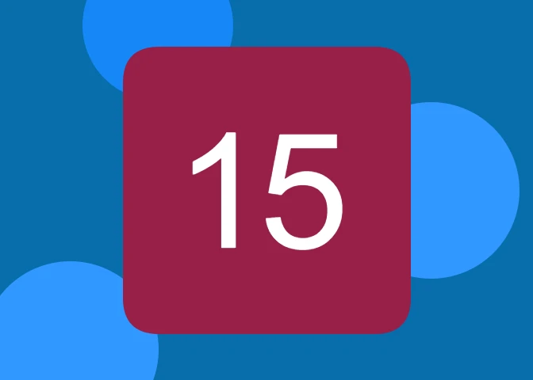

Completion Date: 4/20/22
Development Time: 6 Weeks
This project turned out to be a huge improvement compared to the previous game.
Writing the code turned out to be fairly easy, as there were surprisingly few bugs.
I am very happy with the color scheme used in this project (although the color used
for the level select buttons is a little bit strange). Attempting to create a
smooth level progression was the most difficult thing to do by far. The 15 puzzle
is inherently difficult, so it is hard to ease the player into wrapping their mind
around how the puzzle functions.
I am very proud of the music used in this project. This was my first attempt at
composing background music for a game. It took a while to come up with an instrument
and a chord progression that set the proper mood for the game, but in the end I feel
I settled on something that did the job extremely well. However, one thing that
players may notice is that the song does not loop seamlessly. Because of the way
that JavaScript handles playing audio files, simply using the built in loop property
does not create a perfect loop. I decided that this problem was small enough to be
ignored for the time being, however I plan to do further research on this problem
shortly after this website is released.
8/8/22: Added Mobile Support
Adding mobile support took a lot longer than first anticipated, but was a good learning
experience nonetheless. I found that there seemed to be three steps to adding support
for small devices. The first step is pretty obvious, but it is to add touch controls.
This was pretty easy and only added about 40 lines of code. The next step is to come
up with a way that the game can resize to fit on any screen size. It is good practice to
do this when designing the original game anyways, but in my case I had designed the game
to fit only in a 800 x 600 window. I had done this because I was unsure what adding mobile
support would entail, so I left the task to be done after I had finished the main game.
In the future I will make sure to design my code in a way that I can easily adjust the
content to fit different resolutions. I ended up having to rewrite my CSS twice, but in
the end it was worth it because I believe I have come up with a product that looks good
on small screens. The last step is to fix the many bugs and quirks that come with mobile
support. Once again, an experienced programmer would likely be aware of these issues and
write their code in a way that accounts for most of these problems ahead of time, but
simply had no idea there would be so many issues to account for. The vast majority of these
issues had to do with sound and happened on IOS devices. The biggest issue I encountered
with IOS devices is that playing multiple sounds back to back would cause the game to freeze.
I have seen many games play several sounds at once without any issues so I am sure that
there is a better solution, but I solved this problem by simply not playing as many sounds
on mobile (mainly just disabling the swiping sound, as that is played the most frequently).
All things considered, I am more than happy with how this game came out and I am very satisfied
to now call this project finished.